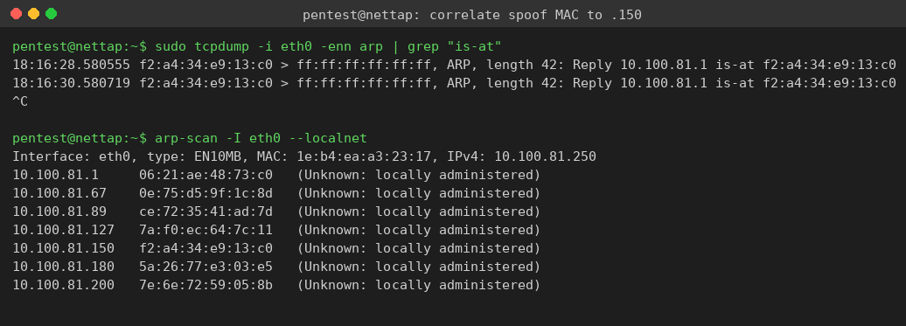
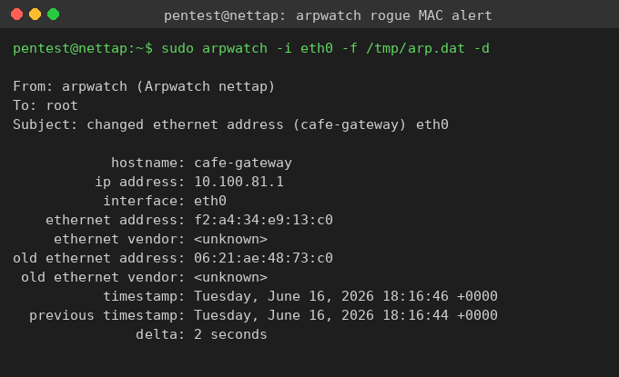
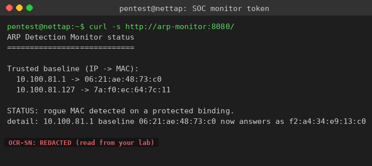

Exercise 8B: Defend the Wire
Engagement Status
Client: Bean & Byte Cafe Role: Blue Team Analyst Phase: Detection (independent challenge)
What you know so far:
- You proved out the detection workflow in the guided exercise: tap, tcpdump, arpwatch, the SOC monitor
- The cafe added back-office systems on the same flat network: a security camera DVR, a menu display, and a NAS backup
- Network monitoring picked up fresh anomalies, this time on the back-office segment
- The staff cannot tell which device is under attack or how to confirm it
Your task: Get onto the cafe broadcast domain, deploy your ARP detection workflow without a walkthrough, identify the rogue device, determine which back-office host it is targeting, and pull the detection token from the SOC monitor. No hand-holding this time.
Objective
Independently detect an active ARP spoofing attack on the Bean & Byte Cafe back-office segment. Identify the rogue device's MAC, determine the targeted host, confirm the attack from your tap, and retrieve the flag token the SOC monitor publishes once it verifies the spoof.
Difficulty: Intermediate Estimated time: 45 minutes
What You Already Know
You ran this play in the guided exercise. The same building blocks apply:
- ARP is a Layer 2 protocol, so you must work from a host on the cafe broadcast domain, not across the VPN.
- The rogue impersonates the gateway with a broadcast forged reply, which a Docker bridge floods to every port, so your tap sees it.
tcpdump -enn arpshows the raw forged replies,arpwatchturns them into a baseline-versus-now alert, andarp-scanlets you match the spoofing MAC to the unexpected host.- The cafe SOC monitor at the
.180offset confirms the attack independently and serves the token over HTTP on port 8080.
The targets are different this time. Find them yourself.
Tools You Will Need
| Tool | Purpose |
|---|---|
arp-scan |
Active subnet discovery to inventory hosts and MACs |
tcpdump |
Capture the forged ARP replies off the wire |
arpwatch |
Alert on a changed MAC-to-IP binding against your baseline |
curl |
Read the SOC monitor status page and token |
All are pre-installed on the network tap. There is no walkthrough below, only checkpoints.
Flag Progress
The flag is a single token delivered by the SOC monitor once the rogue MAC is confirmed on a protected binding. The monitor serves one OCR-SN: string on its status page, so there is no second part to wait for.
| Token | Source | Value | Found? |
|---|---|---|---|
| Detection token | Rogue MAC identified on a protected binding | ________ |
Assembled flag format: OCR{token}
Step 0: SSH Into the Network Tap
Reach the cafe broadcast domain through the network tap at the .250 address. Use the SSH credentials from the scenario (pentest / Security1#).
Connect to the tap
Substitute the .250 address shown on your lab page.
Confirm your interface once you are in:
Checkpoint 1: Inventory the Segment
Sweep the /24 and write down every host with its MAC. The cafe back-office inventory is the gateway, the DVR, the menu display, and the NAS. Any extra host is suspect.
| Device | IP offset |
|---|---|
| Gateway | .1 |
| Security Camera DVR | .67 |
| Menu Display | .89 |
| NAS Backup | .127 |
| Rogue Device | .150 (not in the cafe inventory) |
| SOC Monitor | .180 |
Checkpoint: which host does not belong?
The host at the .150 offset is the rogue laptop. Record its MAC. You will match it against the spoofed gateway reply in the next checkpoint.
Checkpoint 2: Catch the Spoof and Identify the Rogue
Capture ARP frames and read the forged replies. Then correlate the spoofing MAC against your inventory to name the rogue device.
The gateway IP is claimed by a MAC that does not belong to any cafe device, and that MAC matches the unexpected .150 host from your inventory:

Checkpoint: what is the rogue's MAC, and which IP is it impersonating?
The rogue laptop at the .150 offset is broadcasting "the gateway (.1) is at my MAC." The forged reply's is-at MAC is identical to the .150 host's own MAC in your arp-scan output. The rogue's exact MAC is regenerated on every lab run, so read it from your own capture.
Checkpoint 3: Confirm With a Baselined arpwatch
Seed arpwatch with the gateway and NAS bindings you recorded, then let it observe the change. The targeted back-office host this time is the NAS at the .127 offset, but the rogue poisons the gateway binding to insert itself in front of it.
Seed baseline, then watch
Substitute the real MACs from your Checkpoint 1 output.
arpwatch reports a changed ethernet address for the gateway IP, naming the old (legitimate) and new (rogue) MAC:

Checkpoint 4: Pull the Token From the SOC Monitor
The cafe SOC monitor at the .180 offset confirms the spoof independently and publishes the token once the rogue MAC lands on a protected binding.
The page reports the changed binding and serves the token on the final line:

STATUS: rogue MAC detected on a protected binding.
detail: 10.100.81.1 baseline ... now answers as ...
OCR-SN:<TOKEN>
If the page still says 'monitoring'
Give the monitor a few seconds after the rogue starts, then poll until the status flips:
Checkpoint 5: Assemble and Submit
Strip the OCR-SN: prefix and wrap the token value in the flag format:
Submit the assembled flag in the platform.
Incident Report
Document your findings as you would hand them to the cafe owner. Cover:
- Rogue device. Its MAC and the
.150offset where it appeared, with thearp-scanline that exposed it. - Targeted host. The back-office device behind the poisoned gateway binding (the NAS at
.127), and the path the rogue inserted itself into. - Evidence. Your
tcpdumpcapture of the forged replies, thearpwatchchanged-address alert, and the SOC monitor confirmation. - Timeline. When the rogue appeared, when the first forged reply landed, and when each sensor confirmed.
Analysis Questions
-
Pivot in the playbook. The guided exercise targeted the POS terminal; here the victim is the NAS. What in your workflow had to change, and what stayed identical?
-
Naming the rogue without a flip-flop. If
arpwatchonly ever showed a single "changed ethernet address" line and never escalated to flip-flop, could you still name the rogue device? Which tool gives you the rogue's identity most directly? -
One poisoned binding, many victims. The rogue poisons only the gateway binding, yet it can intercept traffic from the DVR, the menu display, and the NAS at once. Why does poisoning the gateway reach all of them?
-
Trust in the sensor. The SOC monitor depends on the baseline it learns at startup. What happens if the rogue is already spoofing before the monitor boots, and how would you defend against that?
Defensive Recommendations
- Dynamic ARP Inspection (DAI) on a managed switch drops forged replies that do not match the DHCP snooping table.
- Static ARP entries for the gateway, NAS, and other critical hosts stop those bindings from being poisoned.
- Network segmentation isolates back-office systems from the guest and POS segments on separate VLANs.
- Permanent monitoring keeps an active ARP sensor running so an attack is caught the moment it starts, not during a later investigation.
Wrapping Up
By completing this challenge independently, you have shown you can:
- Get onto a broadcast domain and inventory it under time pressure
- Catch a live ARP spoof and name the rogue device by correlating MACs
- Confirm the attack with both a passive tool and an independent active sensor
- Retrieve and assemble the detection token without a walkthrough
Flag tokens in service responses are prefixed with OCR-SN:. Use only the value after the prefix when assembling the flag.
Submit your flag: OCR{_____}